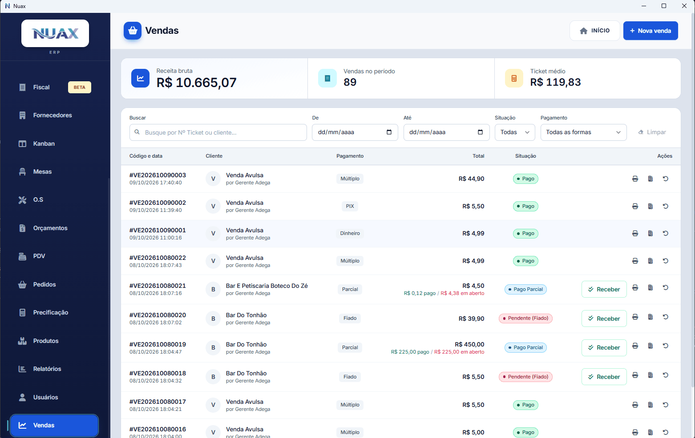

Vendas & Pedidos
Vendas & Pedidos
Registre pedidos para atacado e varejo com tabelas de preço diferenciadas. O estoque é reservado automaticamente no ato da venda — sem risco de vender o que não tem. Comissão por vendedor e estorno com histórico.
- Receita bruta, quantidade de vendas e ticket médio do período
- Filtros por data, situação e forma de pagamento
- Recebimento de fiado e pagamento parcial direto na lista
- Reimpressão de cupom e estorno com histórico